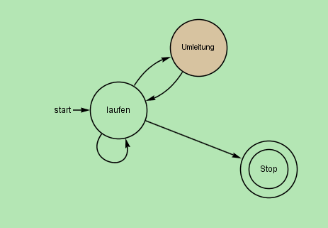
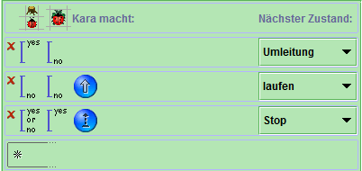
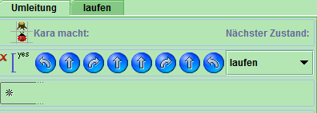

Aufgabenstellung:
Kara sucht ein Kleeblatt. Er weiss, dass eines geradeaus vor ihm liegt - er muss nur um die Bäume herumlaufen. Glücklicherweise stehen nie zwei Bäume nebeneinander. Schreiben Sie ein Programm, das ihn bis zum Kleeblatt führt!

Abbildung 1: Bild des Ablaufs des endlichen Automaten
Abbildung 2: Kara (Welt 1) vor Start
Abbildung 3: Kara (Welt 1) nach dem Ablauf des Programms

Abbildung 4: Zustand

Abbildung 5: Zustand